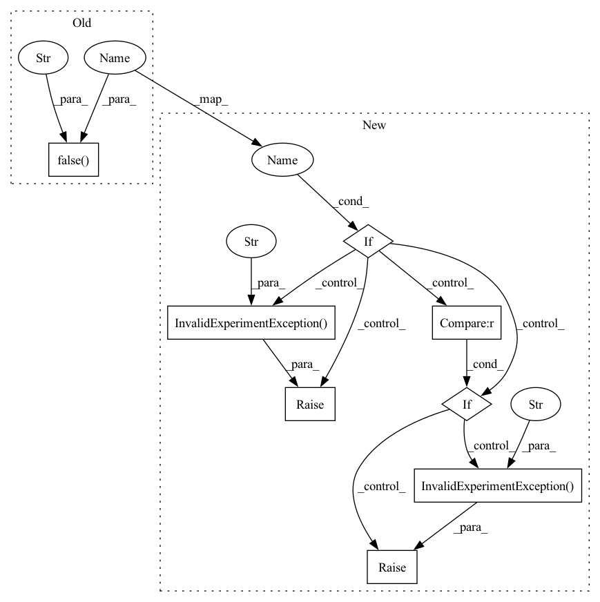

Pattern ID :11149

Before Change
if self._scaler is not None:
check.false(self._scaler.is_enabled(), "Do not mix APEX with PyTorch AMP")
check.false(self._use_apex, "Please only call configure_apex_amp once.")
if self.distributed.size > 1:
check.eq(
num_losses,
1,
After Change
if self._scaler is not None and self._scaler.is_enabled():
raise det.errors.InvalidExperimentException("Do not mix APEX with PyTorch AMP.")
if self._use_apex:
raise det.errors.InvalidExperimentException("Please only call configure_apex_amp once.")
if self.distributed.size > 1:
if num_losses != 1:
raise det.errors.InvalidExperimentException(
"When using distributed training, "
"Determined only supports configure_apex_amp with num_losses = 1.",
)
if self._aggregation_frequency > 1:
raise det.errors.InvalidExperimentException(
"context.configure_apex_amp is not supported with "
"distributed training and "
"aggregation frequency > 1.",
)
if not torch.cuda.is_available():
raise det.errors.InvalidExperimentException(
"context.configure_apex_amp is supported only on GPU slots.",
In pattern: SUPERPATTERN
Frequency: 3
Non-data size: 8
Instances
Fragment ID: 38204582
Project Name: determined-ai/determined
Commit Name: dd59244bf78d4c17ff5dfeeac1c47b759900f5bf
Time: 2022-09-22
Author: 103537968+drh-determined-ai@users.noreply.github.com
File Name: harness/determined/pytorch/_pytorch_context.py
M Class Name: PyTorchTrialContext
N Class Name: PyTorchTrialContext
M Method Name: configure_apex_amp(15)
N Method Name: configure_apex_amp(15)
M Parent Class: det.TrialContext,pytorch._PyTorchReducerContext
N Parent Class: det.TrialContext,pytorch._PyTorchReducerContext
M File Name: harness/determined/pytorch/_pytorch_context.py
N File Name: harness/determined/pytorch/_pytorch_context.py
M Start Line: 462
M End Line: 488
N Start Line: 473
N End Line: 497
'>
Before Change
check.true(HAVE_AMP, "Failed to import torch.cuda.amp. PyTorch >= 1.6 required.")
check.false(self._use_apex, "Do not mix APEX with PyTorch AMP.")
check.is_none(self._scaler, "Please only call wrap_scaler or use_amp once.")
check.true(len(self.models) == 0, "Please call wrap_scaler before wrap_model.")
After Change
"Using context.wrap_scaler() requires PyTorch >= 1.6.",
)
if self._use_apex:
raise det.errors.InvalidExperimentException("Do not mix APEX with PyTorch AMP.")
if self._scaler is not None:
raise det.errors.InvalidExperimentException(
"Please only call wrap_scaler or use_amp once.",
)
if self.models:
raise det.errors.InvalidExperimentException(
"Please call wrap_scaler before wrap_model.",
'>
Fragment ID: 38204579
Project Name: determined-ai/determined
Commit Name: dd59244bf78d4c17ff5dfeeac1c47b759900f5bf
Time: 2022-09-22
Author: 103537968+drh-determined-ai@users.noreply.github.com
File Name: harness/determined/pytorch/_pytorch_context.py
M Class Name: PyTorchTrialContext
N Class Name: PyTorchTrialContext
M Method Name: wrap_scaler(2)
N Method Name: wrap_scaler(2)
M Parent Class: det.TrialContext,pytorch._PyTorchReducerContext
N Parent Class: det.TrialContext,pytorch._PyTorchReducerContext
M File Name: harness/determined/pytorch/_pytorch_context.py
N File Name: harness/determined/pytorch/_pytorch_context.py
M Start Line: 371
M End Line: 382
N Start Line: 374
N End Line: 395
'>
Before Change
if self.env.managed_training:
check.false(self._use_apex, "Must call wrap_optimizer() before configure_apex_amp.")
check.gt_eq(
backward_passes_per_step,
1,
"backward_passes_per_step for local gradient aggregation must be >= 1",
After Change
if self.env.managed_training:
if self._use_apex:
raise det.errors.InvalidExperimentException(
"Must call wrap_optimizer() before configure_apex_amp.",
)
if backward_passes_per_step < 1:
raise det.errors.InvalidExperimentException(
"backward_passes_per_step for local gradient aggregation must be >= 1; "
f"got {backward_passes_per_step}.",
)
if self.distributed.size > 1 and self._distributed_backend.use_horovod():
optimizer = hvd.DistributedOptimizer(
optimizer,
'>
Fragment ID: 38204589
Project Name: determined-ai/determined
Commit Name: dd59244bf78d4c17ff5dfeeac1c47b759900f5bf
Time: 2022-09-22
Author: 103537968+drh-determined-ai@users.noreply.github.com
File Name: harness/determined/pytorch/_pytorch_context.py
M Class Name: PyTorchTrialContext
N Class Name: PyTorchTrialContext
M Method Name: wrap_optimizer(3)
N Method Name: wrap_optimizer(3)
M Parent Class: det.TrialContext,pytorch._PyTorchReducerContext
N Parent Class: det.TrialContext,pytorch._PyTorchReducerContext
M File Name: harness/determined/pytorch/_pytorch_context.py
N File Name: harness/determined/pytorch/_pytorch_context.py
M Start Line: 228
M End Line: 233
N Start Line: 230
N End Line: 240